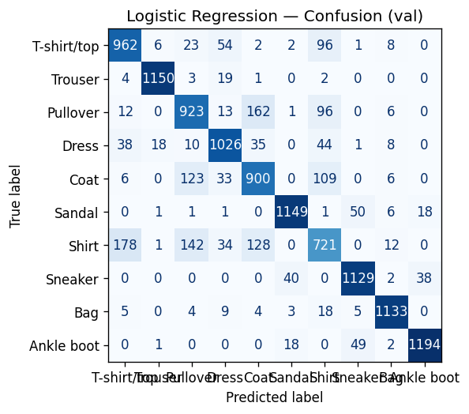
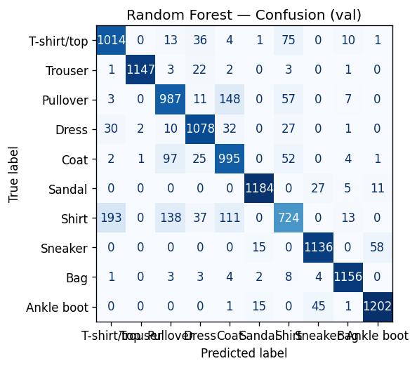
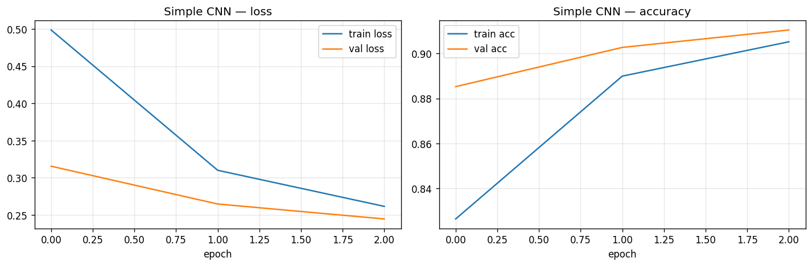
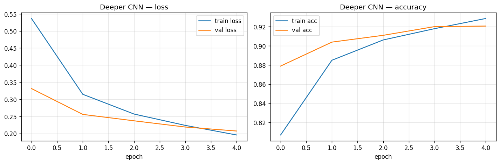

COMP-443 - Deep Learning
Assignment 01 Report
Classical vs Deep Models on Fashion-MNIST
Students:
Ali Hamza (Registration No.: B23F0063AI106)
Zarmeena Jawad (Registration No.: B23F0115AI125)
Course: Deep Learning (COMP-443)
Instructor: Dr. Arshad Iqbal
Submission Date: 16 February 2026
Abstract
This report compares two classical machine-learning models and two convolutional neural networks on the Fashion-MNIST dataset. All models are trained and evaluated on the same train/validation split. Results show that CNNs outperform classical models by a clear margin, confirming the importance of spatial feature learning for image classification.
Table of Contents
- 1. Problem Statement and Requirements
- 2. Dataset and Preprocessing
- 3. Methodology (Step-by-Step)
- 4. Model Selection and Rationale
- 5. Model Specifications
- 6. Training Setup and Evaluation Metrics
- 7. Quantitative Results
- 8. Figures and Explanations
- 9. Discussion
- 10. Conclusions
- 11. How to Reproduce
1. Problem Statement and Requirements
The assignment requires the following:
- Select one suitable dataset from a public source.
- Implement 4 algorithms in total.
- Use 2 classical (conventional) models.
- Use 2 deep learning models.
- Train, evaluate, and compare all four models in a properly formatted report.
This report uses the Fashion-MNIST dataset and implements:
- Logistic Regression (classical baseline)
- Random Forest (classical baseline)
- Simple CNN (deep model)
- Deeper CNN (deep model)
2. Dataset and Preprocessing
2.1 Dataset overview
Fashion-MNIST consists of 28x28 grayscale images across 10 clothing categories. The dataset contains 60,000 training images and 10,000 test images.
Class labels: T-shirt/top, Trouser, Pullover, Dress, Coat, Sandal, Shirt, Sneaker, Bag, Ankle boot.
2.2 Preprocessing pipeline
- Load Fashion-MNIST using
tf.keras.datasets.fashion_mnist.
- Normalize pixels from
[0, 255] to [0, 1] as float32.
- Create a validation split (seed = 42).
- Split sizes: Training 48,000 (80%), Validation 12,000 (20%), Test 10,000 (held out; not used for model selection).
- Add channel dimension to create
(28, 28, 1) for CNNs.
- Flatten to 784-dimensional vectors for classical models.
3. Methodology (Step-by-Step)
- Select Fashion-MNIST as a balanced, standard benchmark for image classification.
- Apply the same preprocessing pipeline to ensure fair comparison.
- Train two classical baselines on flattened features.
- Train two CNNs on image tensors with the same train/val split.
- Evaluate all models on the validation set using accuracy and confusion matrices.
- Compare results and analyze errors by class.
- Summarize findings and discuss limitations and improvements.
4. Model Selection and Rationale
- Logistic Regression: Simple linear baseline, fast to train, interpretable, and useful to establish a minimum performance threshold.
- Random Forest: Non-linear classical model that captures feature interactions and is often stronger than linear models on flattened image data.
- Simple CNN: Small convolutional network that learns local spatial patterns with limited capacity and lower overfitting risk.
- Deeper CNN: Adds a second convolutional block and a larger dense layer to test whether higher capacity improves accuracy.
5. Model Specifications
5.1 Logistic Regression (Classical)
- Multinomial logistic regression
- Solver:
lbfgs
- Regularization: L2,
C = 1.0
- Max iterations: 200
- Input: 784-dimensional flattened pixels
5.2 Random Forest (Classical)
RandomForestClassifier- Trees: 150
- Max depth: None
random_state = 42- Input: 784-dimensional flattened pixels
5.3 Simple CNN (Deep)
- Input:
(28, 28, 1)
- Conv2D(32, 3x3, ReLU, same)
- Conv2D(32, 3x3, ReLU, same)
- MaxPooling2D(2x2)
- Flatten
- Dense(128, ReLU)
- Dropout(0.3)
- Dense(10, Softmax)
5.4 Deeper CNN (Deep)
- Input:
(28, 28, 1)
- Conv2D(32, 3x3, ReLU, same)
- Conv2D(32, 3x3, ReLU, same)
- MaxPooling2D(2x2)
- Conv2D(64, 3x3, ReLU, same)
- Conv2D(64, 3x3, ReLU, same)
- MaxPooling2D(2x2)
- Flatten
- Dense(256, ReLU)
- Dropout(0.4)
- Dense(10, Softmax)
6. Training Setup and Evaluation Metrics
6.1 Training configuration (CNNs)
- Optimizer: Adam
- Learning rate: 1e-3
- Loss: Sparse categorical cross-entropy
- Batch size: 128
- Epochs: 50 (with early stopping)
- Early stopping: patience 5, restore best weights
6.2 Evaluation metrics and formulas
- Accuracy
- Cross-entropy loss (for CNNs)
- Confusion matrix
Softmax: p_i = exp(z_i) / sum_j exp(z_j)
Cross-entropy: L = -(1/N) * sum_n log(p_{y_n})
Accuracy: Acc = (# correct predictions) / N
Note: Classical models are not trained with the same Keras loss interface, so "Val Loss" is reported only for CNNs.
7. Quantitative Results
Validation results from reports/assignment01_results.json:
| Model |
Type |
Val Loss |
Val Acc |
| Logistic Regression |
Classical |
N/A |
0.8573 |
| Random Forest |
Classical |
N/A |
0.8853 |
| Simple CNN |
Deep (CNN) |
0.2293 |
0.9148 |
| Deeper CNN |
Deep (CNN) |
0.2071 |
0.9206 |
Key takeaways:
- Random Forest improves the baseline by about 2.8% over Logistic Regression.
- Simple CNN beats the best classical model by about 2.9%.
- Deeper CNN gives the best overall accuracy and lowest validation loss.
8. Figures and Explanations
Figure 1 - Logistic Regression confusion matrix (validation)

- Correct predictions appear along the diagonal.
- The hardest class is Shirt, which is frequently confused with T-shirt/top and Pullover.
- Overall accuracy is 85.7%, showing a reasonable but limited linear baseline.
Figure 2 - Random Forest confusion matrix (validation)

- The diagonal is stronger than Logistic Regression, indicating fewer mistakes.
- Confusions among similar upper-body clothing items remain a challenge.
- Validation accuracy improves to 88.5%, confirming the benefit of non-linear models.
Figure 3 - Simple CNN learning curves (loss and accuracy)

- Training and validation losses decrease together, indicating stable learning.
- The validation accuracy curve reaches about 91.5% and remains steady.
- Early stopping prevents overfitting as the validation loss plateaus.
Figure 4 - Deeper CNN learning curves (loss and accuracy)

- Lower validation loss than the simple CNN indicates better fit.
- Slightly higher validation accuracy (about 92.1%) confirms the benefit of added depth.
- The gap between training and validation curves stays modest, suggesting good generalization.
9. Discussion
9.1 Classical vs deep models
Classical models operate on flattened pixel vectors, ignoring 2D spatial structure. This limits their ability to learn shapes and textures. CNNs learn local filters, which directly capture edges, patterns, and spatial relationships, leading to higher accuracy.
9.2 Error analysis
From the confusion matrices and classification reports:
- Shirt is the most difficult class for classical models (lowest recall: 0.5929 for Logistic Regression and 0.5954 for Random Forest).
- Confusions are common between visually similar categories like T-shirt/top, Shirt, and Pullover.
- CNNs reduce these errors because spatial context is preserved.
9.3 Regularization and overfitting
Dropout (0.3-0.4) and early stopping keep the CNNs from overfitting. The learning curves show steady validation performance without a large gap to training accuracy.
10. Conclusions
- Logistic Regression provides a fast, interpretable baseline but lacks spatial awareness.
- Random Forest improves baseline performance by modeling non-linear feature interactions.
- CNNs deliver the best results by exploiting image structure.
- The Deeper CNN is the top performer, confirming that additional capacity improves accuracy on Fashion-MNIST.
11. How to Reproduce
- Install dependencies:
cd "Artificial-Neural-Networks-Lab-COMP-341L"
./venv/bin/pip install -r requirements.txt
- Run the experiment script:
./venv/bin/python3 "Deep Learning; COMP-443/Assignment 01/src/run_experiments.py" --epochs 50
- Figures will be saved under
Deep Learning; COMP-443/Assignment 01/figures/ and results in reports/assignment01_results.json.